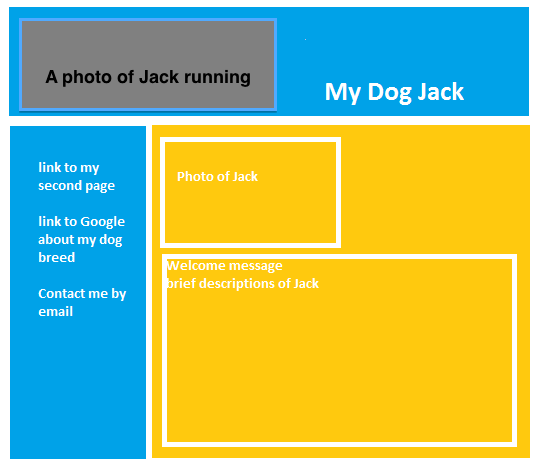

Learn to create your own webpages
Layout and Style
-
Sketch your own web page layout design.
To do this:
- You can use papers and pencils
- You can use Word's shapes or textboxes
- You can also use Paint program
- Be sure to annotate the elements of your layout
The following is a sketch of layout for the homepage (index.html ) this tutorial will use to make our homepage look nicer. It was created using Paint.
